Book Reviews
My Book Reviews
2026 Reading Goal: 40
Read so far: 23
Doctor Zhivago by Boris Pasternack (1957)
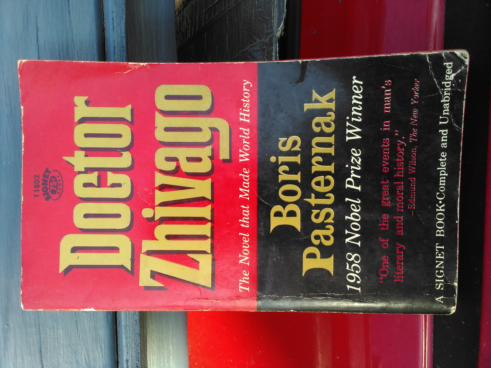
Still reading!
Wyoming Sun by Edward Bryant (1957)
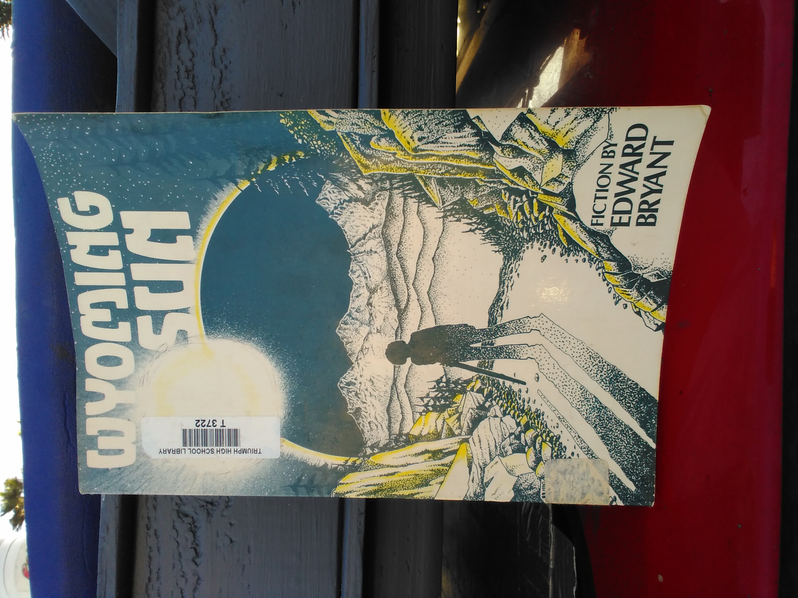
Rating: x/10 Prairie Sun Still reading!
Rating: x/10 giANTS Still reading!
Rating: x/10 Teeth Marks Still reading!
Rating: x/10 Beyond the Sand River Range Still reading!
Rating: x/10 Strata Still reading!
The Raft by Robert Trumball (1942)
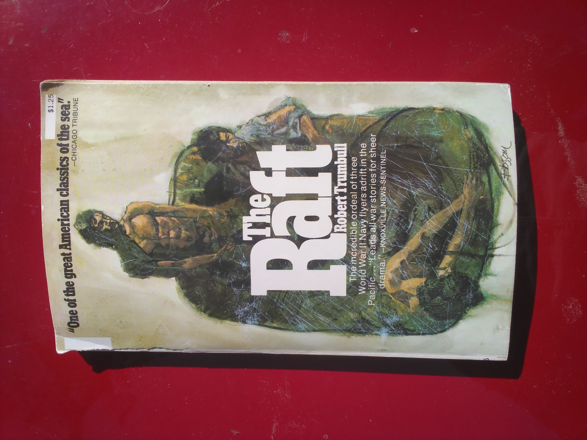
Still reading!
The Adventures of Tom Sawyer by Mark Twain (1876)
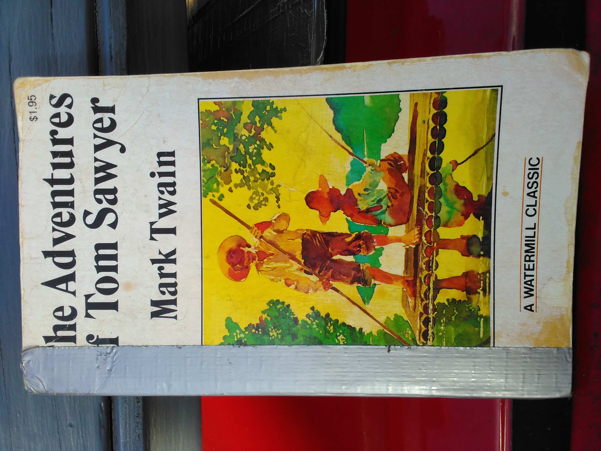
Still reading!
Seven Short Novel Masterpieces by Various; Edited by Leo Hamalian and Edmond Volpe (Various/1964)
Final review written 7/9/2026
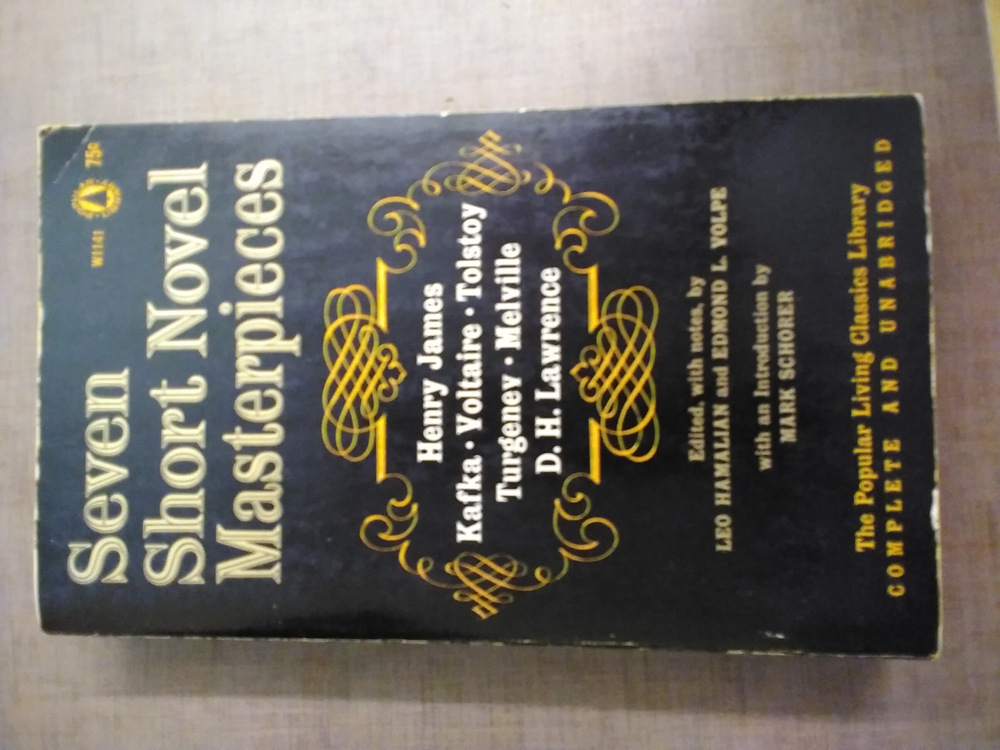
Rating: 10/10 Candide by Voltaire - A satire of the popular 18th century belief that all troubles and personal misfortunes, due to the nature of cause and effect, ultimately lead to the best outcomes in our, best of all possible worlds. Our main character Candide goes from traumatic horror to traumatic horror, encountering people of all types who have all gone through the same. It's a funny story full of jokes, subtle and obvious. The constant change of scenes is contrived, but contributes to the humor of the story. A little anti-semetism and sexism is to be expected I suppose. A good read in about a hundred pages.
Rating: 8/10 First Love by Ivan Turgenev - This was a surprising story that I would classify as a horror, although the interweb disagrees. A young boy is smitten by an older young woman and becomes enraptured in her circus of similarly obsessed men, including a shocking surprise lover. It was reminiscent of the legend of sirens. One of the main themes is the danger of intense passion, and to be wary of the "powers and trances" of women.
Rating: 8/10 Benito Cereno by Herman Melville - A great story I will most certainly read again. A dramatic suspense that you will enjoy so much more without knowing what it’s about, as regretfully I already did. An American sea captain comes across a Spanish slave ship in great distress, and offers their assistance. While it maintains itself as a well written critique of slavery, it also makes commentary on fence sitters to the slavery issue and of people who insist “I’m not racist”. It challenged the idea of the simplemindedness of enslaved Africans in a story that demonstrates the unethical absurdities of slavery.
Rating: 8/10 Master and Man by Leo Tolstoy - This one was tragic, and heartwarming, and the characters are frustrating, and redeemable. A story about the truest duty we have to our fellow human, to care. Rich in environment, tight and deserved in it's pacing.
Rating: 6/10 The Lesson of The Master by Henry James - A fine story, with a surprising ending. I found it generally plodding. I did enjoy James' writing, particularly when it comes to what he didn't write. I just didn't find it a very compelling piece. Another warning of, be wary of women and the way they can disrupt your life.
Rating: 7/10 The Metamorphosis by Franz Kafka - I skipped ahead to read the piece by Melville, and this one. I was aware earlier of the story, and that chiefly was my desire when I purchased this book. It’s humorous, in the way that a man insisting he could still come to work even after becoming a bug rather than calling out sick can be. In it’s absurdity exists a commentary on guilt and shame, of family, and of remorse. A worthy read that I really enjoyed, but not as much as I expected to.
Rating: 8/10 Daughters of The Vicar by D. H. Lawrence - Second to Candide, this is my favorite story of this book. The characters are well written, compelling, and all miserable. Loyal to the social obligations of their status, each member of the family forces upon themselves and each other a dreary misery, exemplified by the two paths the daughters take in life and the two differing men they choose for themselves to stay bethrothed to. I like a tragedy and this endes so as such, I swore I was missing pages.
Utopia by Thomas More; Translated and Edited by Robert Adams (1516/1992)
Review written 6/28/2026
Rating: 7/10
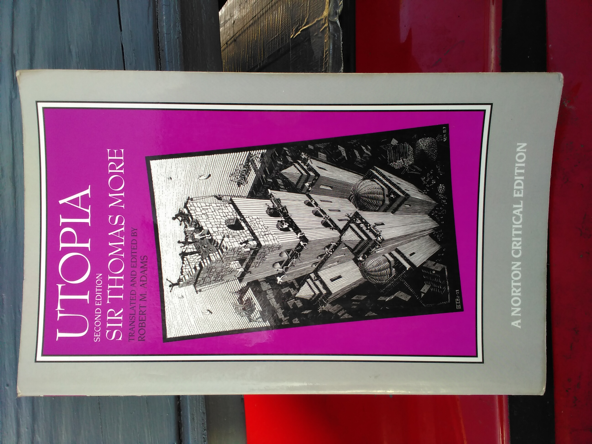
This is the piece that created the genre of perfect societies. What perfect means though, will always be different to all people. The world of Utopia I would classify as a sort of puritan commune, and was fascinating to see developed from the imagination of a writer on the cusp of the growing renaissance. There are two parts, a dialogue between characters, and a clean curt description of the society. The satire of the modern era in which More lived is also evident, his concerns proving to be well justified when he was executed by his friend King Henry VIII only twenty years later.
This translation from Adams includes a number of excerpts, critiques, and analyses of More's piece by other writers, or from other pieces of the genre. Orignally intending only to read the story, I was delighted with the additionally provided context and content. I enjoyed the story and book thoroughly. It is certainly a piece from its time.
A Song of Sixpence by A.J. Cronin (1964)
Review written 6/25/2026
Rating: 1/10

A Song of Sixpence is a 1900’s coming of age novel of a Scottish schoolboy, influenced by Cronin’s personal experiences growing up. I did not like this book very much at all. I found the plot generally bland and meandering.
The story focuses on a boy named Laurence, who is unambitious, bland, annoying and petulant. Throughout the book he frustrated me immensely, and he never solves his issues or grows to become better. He ponders the wasting of his young life, and is eventually saved by an absolute deus ex machina that was completely undeserved.
The abuse of women is a significant recurrent theme in the story attempting to progress the main character’s development. A young acquantince is killed in an accident, the family business fails due to his mother's inability to manage it (after his father dies), and then quickly casting off his cousin (and first lover) immediately after she has a miscarriage, who then returns to her abusive ex.
It’s a very mediocre book, very clearly written in a different time, and it isn’t worth remembering.
Me Talk Pretty One Day by David Sedaris (2000)
Review written 5/15/2026
Rating: 7/10
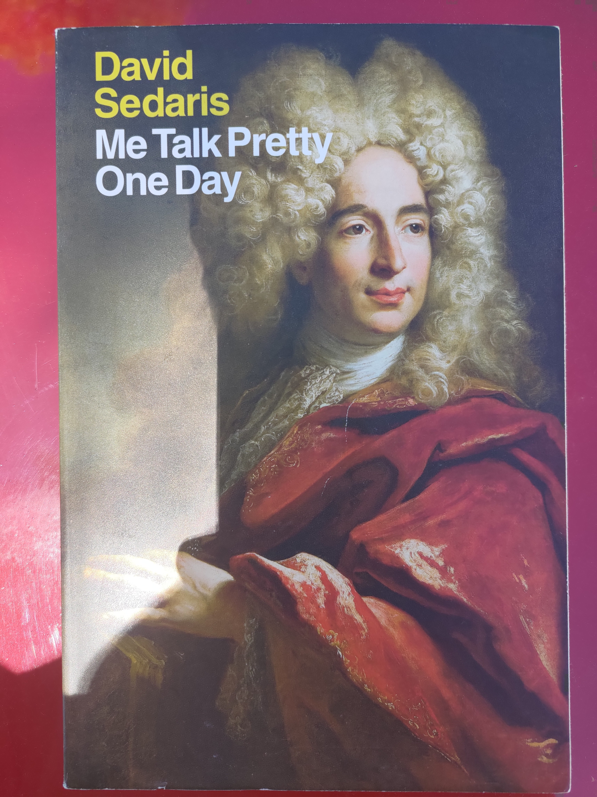
Me Talk Pretty One Day is a collection of autobiographical short stories from Sedaris, recounting with wit and comedy scenarios from his youth in North Carolina and his adulting antics in New York City. It was recommended to me by a coworker and I enjoyed all of Sedaris’s stories, for the most vast part. The title comes from the latter half of the book when he recounts a lot of his experiences learning the French language.
As I was describing my feelings to a friend about the book (and simultaneously recommending it), I think I could sum up my qualms with it by saying, Sedaris seems to recognize his flaws and shortfalls, yet he chooses to revel in them instead of improve himself. Yes, I did find the same stories still humorous, but I winced at a book published in the 21st century that felt it as acceptable to describe a person as “negro”, regardless of the age of the story itself (not to say it was acceptable in the 70s, either). There is also a story of Sedaris being given guitar lessons by a man consistently and repeatedly described as a “midget”, and establishing that this is definitively the best label for the man, in that he is decidedly not a “dwarf”. Is there a difference, my google search will have to tell me independently of this review.
Sedaris certainly grew up in a conservative family, although I don’t believe he explicitly says this. But it really shows in his stories. For example, his frequent comments on the physical appearances of others probably stems from the same fountain his father drank from when critiquing the woeful inadequacies of his own daughters’ attractiveness. When referring to men he would refuse to date, he includes “men who know the words progressive and zeitgeist (how one can be repulsed by the charisma of the stunning Sam Seder, I could not understand). Similarly unacceptable is any rainbow flag, that he quickly protests the existence of twice. Sedaris certainly has some underlying internal queer phobia.
The writing though, was impeccable. I really liked the stories and I laughed, a lot, out loud at them. Frequently. I began to doubt his credibility when he insisted he couldn’t remember the name of the movie “Herbie”, but I have to forgive the low brow among us for not knowing car pop-culture. If I wrote a book of stories that I remember from my past, I think I would complain about similarly innocuous things as he does. As said above, I have and would recommend this book, though it should be read with a critical eye.
It really feels like a book published in the metaphorical man-cave of the early aughts. A very confident man, who is subtly embarrassed by the small ways he stands out in the world. A lot of daydreaming of alternative realities if he chose to say something, and I rather liked his internal monologues. I think if an objective third party wrote these same stories, Sedaris would be included among the many that he himself rants about. I think many of the stories are not any more spectacular than those endured by many of us, but his ability to put sarcastic wit to paper is what makes the book a worthy read for a Sunday afternoon in the park.
I Had Seen Castles by Cynthia Rylant (1993)
Review written 5/8/2026
Rating: 7/10
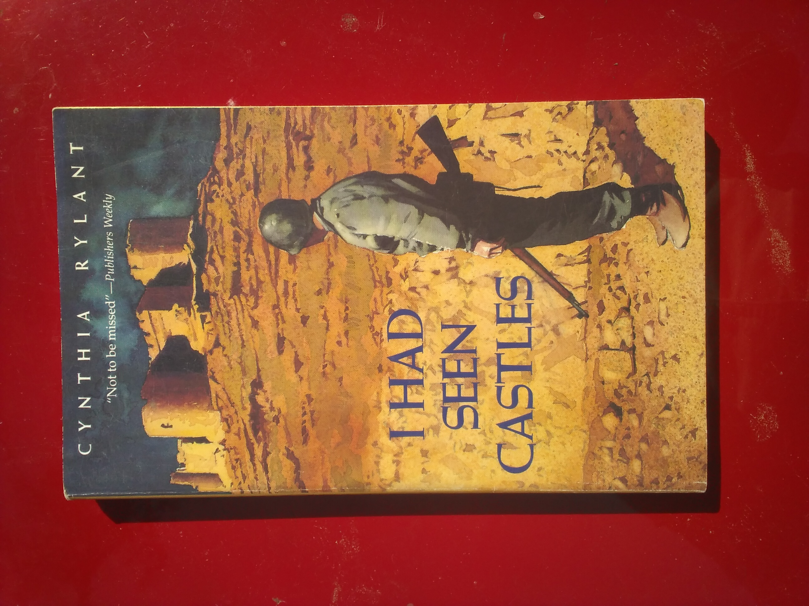
I Had Seen Castles is a short read, about a hunded pages, chronicling the personal development of a 17 year old boy as he joins the fight in WWII and lives to reflect upon how it changed him in his old age.
Yes, it was good. Particularly for it's length. I felt the anti-war message to be simplistic and unnuanced. But it was written with a very specific intent, to focus on the internal mind of this one soldier during the war, and many critques I would feel inclined to write here are unjustified given what this book was designed to be. A quality read to introduce a young teen to the horror of war. Easily read in one sitting.
Nicodemus: Post-Reconstruction Politics and Racial Justice in Western Kansas by Charlotte Hinger (2016)
Review written 5/8/2026
Rating: 8/10
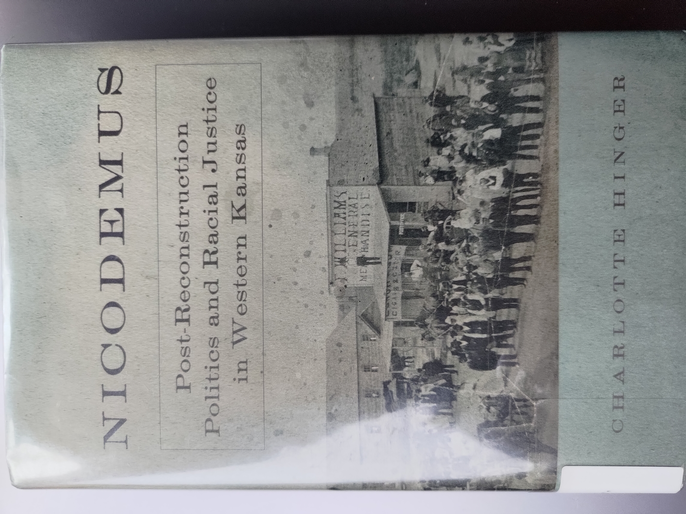
Nicodemus (the full and official title is above) is an excellent historical narrative of the black settlement of the same name in Kansas, founded in 1877. This book caught my eye because I have twice visited this town in Kansas, where it is now a national historic site, and I most enjoyed learning more about it’s history and the history of the surrounding area.
After the Civil War, a great number of freed slaves saw Kansas as a new racial beginning, thanks to the famous reputation of John Brown during the conflict known as Bleeding Kansas. This book follows the influences on the area set forward by early Nicodemus settlers and organizers, and their distinct methods by which to propagate the uplift of freed slaves and all black people.
John Niles advocated a separatist policy, and was the behind-the-scenes champion for the first bill in the federal government that would grant reparations to freed slaves. Edward McCabe advocated for the election of black politicians and using the law to uplift and improve the conditions of black people in the United States. Abram Hall Jr. believed that through the education and skills training of freed slaves, that the white population would come to view them as equals through hard work.
I really enjoyed this book, and it is well researched. Sometimes, due to talking about the same things from different perspectives (as well as some missed points in editing, I believe) the same thing gets said multiple times, and I would find myself flipping back pages to understand if we were still talking about the same event. It was a little distracting. The stories were excellent, and fair minded when testimonies contradicted. I do recommend this book, and I will certainly have to make a third trip back to Nicodemus, holding this newly discovered knowledge.
As post script I write: I confirmed some of these details in my review with google (as I had already returned the book), and yet again it was demonstrated to me the inaccuracies of google AI, and by extension, all current AI fact-finding models. This book was written by a professional writer who cites her sources and balances the stories with known facts. A computer model run by a company that just wants your click will not do this. My experience is another testimony to the importance of understanding your source of information, and gathering it yourself rather than trusting an algorithm to find it for you.
Learn more about the town of Nicodemus here, on the National Park Service website.
NPS Nicodemus, KSGenderqueer by Maia Kobabe (2019)
Review written 5/1/2026
Rating: 10/10
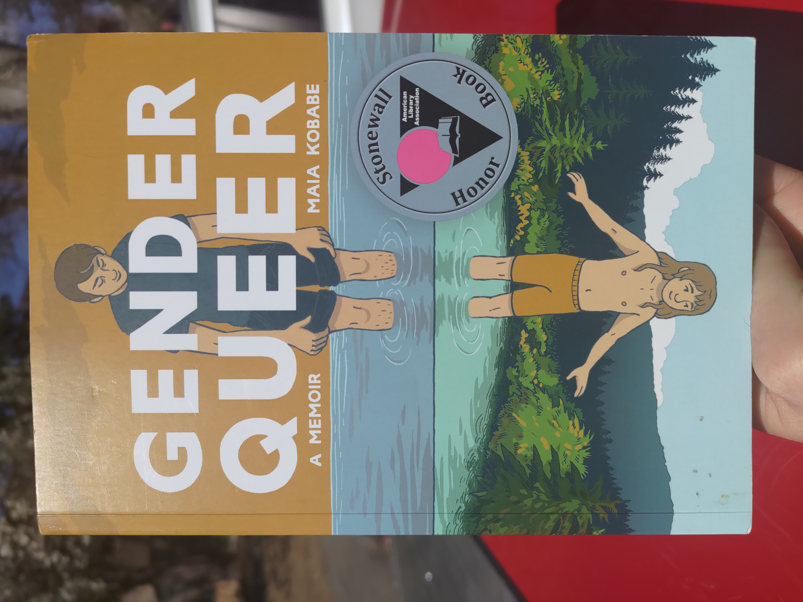
Genderqueer is an autobiography about the author’s self-exploration and discovery into eir gender identity. I really enjoyed the artwork and styling drawn by Kobabe and it was a pleasant, enjoyable, quick book to both read and view.
I found it remarkable at how open e was about eir experience of having been, and continuing to be, anxious about coming out as nonbinary. This book gave me new insights and, I think, helped me in understanding better the lives and experiences of gender from trans people I’ve known and know now.
I sought out this book specifically because around the country, conservatives were, and are, banning it and books like it in public libraries and schools all over. This is not a scary book, or a gross book, it’s just a book about the complexities of the human experience. I think that if every person afraid of this graphic novel read it with an open mind instead, the world would be a much better place. I recommend this book and if I don’t end up giving it to a worthy individual, it will remain on my bookshelf.
Rifles For Watie by Harold Keith (1957)
Review written 5/1/2026
Rating: 7/10
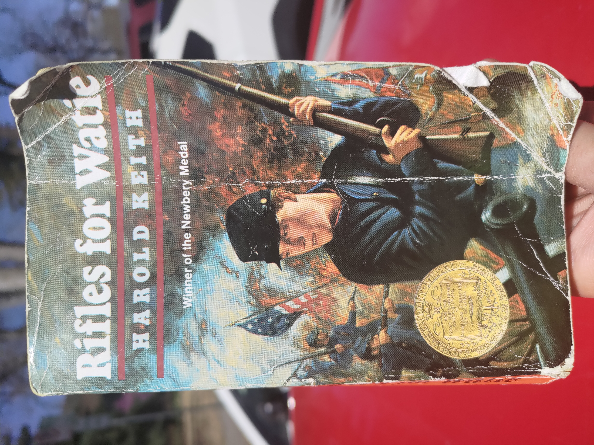
Rifles For Watie (“Watie” is a name and pronounced “weighty”) is a historical fiction following a 16 year old boy from Kansas who joins and fights for the Union side during the Civil War. It is a young-adult novel that one an award the same year it was published. It remains credited for being an accurate and enlightening story about the Western theatre of the civil war, an often overlooked aspect. Colonel Watie was a Cherokee general fighting on the side of the Confederacy, and was the last confederate general to surrender at the end of the war. This book was recommended as a personal favorite of a coworker of mine and I read it in tandem with another friend at the same job.
Believe it or not, a book about the civil war written before the civil rights act was passed, has a lot of racism in it. Black people are often described as negro, or occasionally the n-word, and there is a famous scene at which an elderly enslaved man stays alive juuuuust long enough to see our white protagonist before dying, often characterized as a white savior moment. I think the story tries to ignore the motivations behind southern secession, and makes points to emphasize that even the northern soldiers didn’t care much about slavery.
Although I did find it an enjoyable read, it felt as though it was initially drafted as a research essay, and then a narrative was created to make it more readable. The characters are pretty bland, they don’t develop much at all. I enjoyed it for it’s historical descriptions of every small thing you couldn’t even imagine before reading it, but the narrative plot was choppy, because this book is just barely a story. If you like history, particularly but not necessarily civil war history, I think you will enjoy this book. If you want action, or romance, you will be disappointed when you get to hear about what the confederacy replaced coffee with as a drink and how gross it was.
Cold Fire by Dean R. Koontz (1991)
Review written 5/1/2026
Rating: 8/10
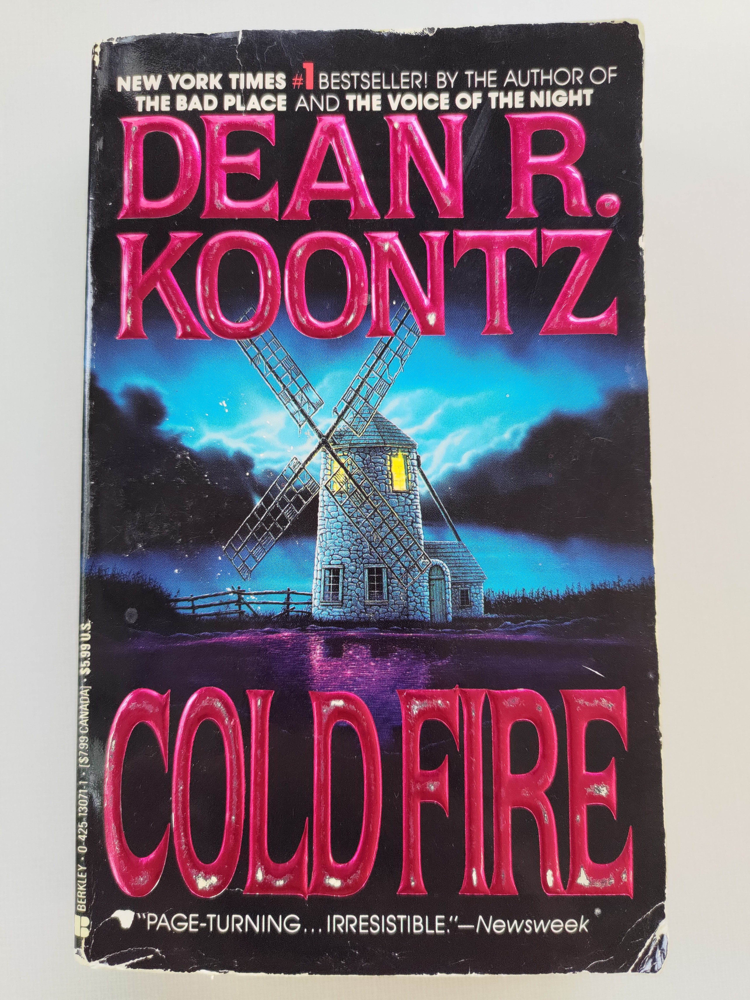
Cold Fire is a great book suggested to me by a coworker, and as I was reading it, people seeing me kept telling me how great it was too (I had never heard of Koontz, I suppose he's pretty popular!)
It follows a strange man with a supernatural ability to predict when certain people will die, and uses this power to save them, and a news reporter fascinated by his power and mystery as they figure the truth out together.
It really had me, easy to read a hundred pages in one sitting, kept me wondering where things were going next. I liked the characters, and I liked the descriptions. Wow, you want to learn some new vocabulary, this is a good one for that. Koontz felt a little full of himself sometimes with his descriptions but I enjoyed them overall. I found the "woman with no purpose finds herself through devotion to her new love she met two weeks ago" rather trite.
I do recommend it, I found it highly enjoyable, and I will definitely keep Koontz in mind for future readings.
Age of Innocence by Edith Wharton (1920)
Review written 4/22/2026
Rating: 10/10
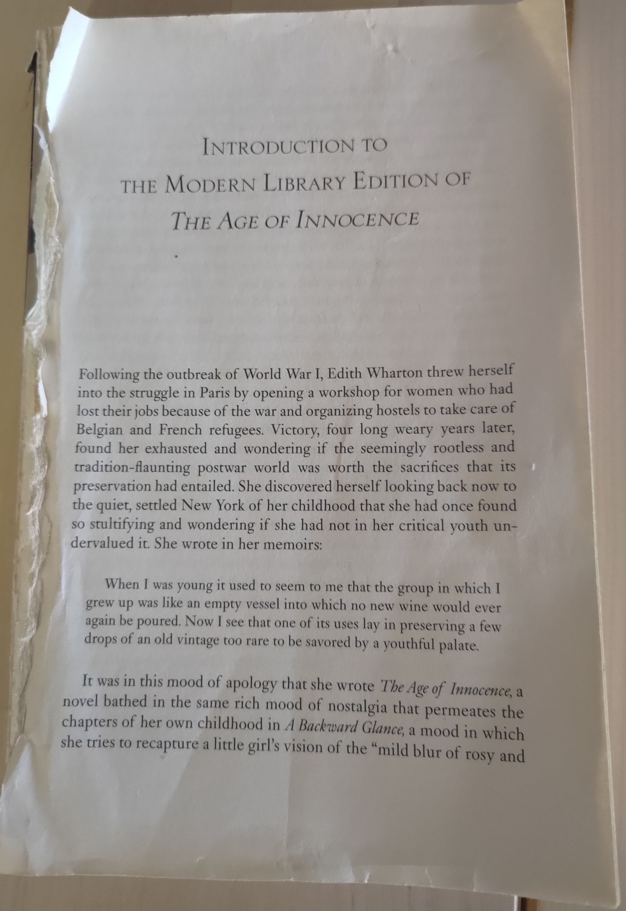
I have been beyond excited to write my review of this book. Of all the books I have ever read in my entire life up to this point, nothing has enraptured me with such emotional investment and continuous joy of reading as The Age of Innocence. Initially found only 4/5th intact in a street gutter, I began reading it on an adventurous whim, and it is such whims that this book encourages you to always take advantage of. The tragic story of a forbidden romance that brought to mind a favorite quote: "My shoes are too tight, but it doesnt matter, because I have forgotten how to dance" from Londo Mollari
It's prose, as flowery as the scenes it describes, tells the riveting story of Newland Archer, a member of the gilded-age New York elite, as he balances his personal desires and longings against that of the duty he feels is owed to his high-classed family and associates. It has incredible descriptions of the reality of moneyed daily life and I so greatly enjoyed seeing the complex rigidness of the standards of high society.
Any moments of lost attention are my fault alone. The scenes can sometimes be so descriptive I would find my mind wandering, but I would gladly reread every paragraph I missed again. My distractions were never caused by boredom, but rather that this is an old book with an old way of writing, built of characters even older. Full of drama and suspense, I was constantly begging to know what the next pages events would turn out to reveal. My mouth was agape at every twist pushed upon me, and to the very end I could not imagine how the story would finally conclude.
More than any story I've written of so far, I must recommend this. Do not EVER leave a chapter half read, you MUST take in every morsel of this steady adventure in personal exploration. Read the final chapter after a hearty Sunday meal just before bed, and you won't sleep a better night in your life. You'll have something to talk about all the following week.
Unfortunately, I Exist by Stephanie Gillis (2024)
Review written 4/22/2026
Rating: 4/10
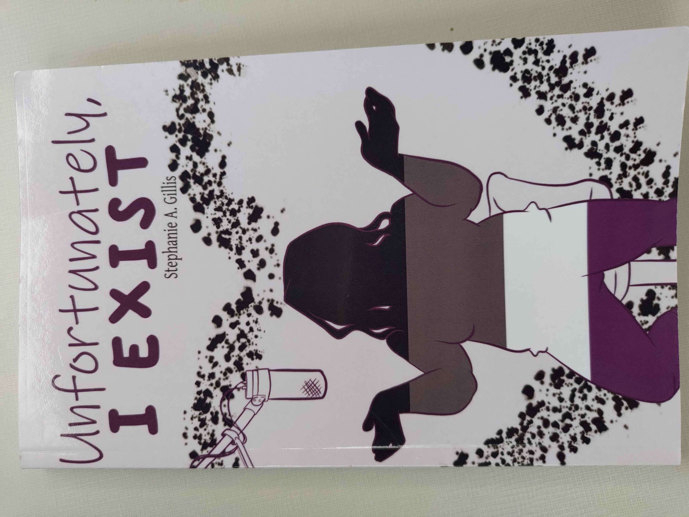
Discovered at a local craft fair in Fort Collins, CO, Unfortunately, I Exist is a short memoir written as part of a personal challenge by Stephanie Gillis to write one short story every month for a year. This is her only non-fiction story at the time of writing this review. I purchased this book after recognizing it's primary focus on the author's asexuality, which I wanted to explore more of after a brief discussion with a friend of mine concerning the validity of asexuality as part of the queer community. It is my opinion that anything outside of the heterosexual, heteroromantic norm of modern society is a part of the LGBTQ+ umbrella, that this umbrella should be widely inclusive rather than exclusive, and then such identities are self-labeled. This book exemplifies this idea through Gillis's personal story.
While I found this short book of under 70 pages enlightening and focusable, I was sometimes frustrated at much of the apologizing to the reader the author did over living her own life. There is much that is still hidden behind the scenes, but many of these stories are deeply personal and revealing and it is brave of Gillis to reveal them to a public audience. It was a quick read, quick paced, and a quality book for being written in less than a month.
I don't believe it warrants holding on my bookshelf, but it is certainly the kind of book that should be passed around after reading (and I myself plan to do so) to people that think asexuality isn't "different" enough to be considered queer.
The Time Tunnel by Murray Leinster (1967)
Review written 4/10/2026
Rating: 0/10
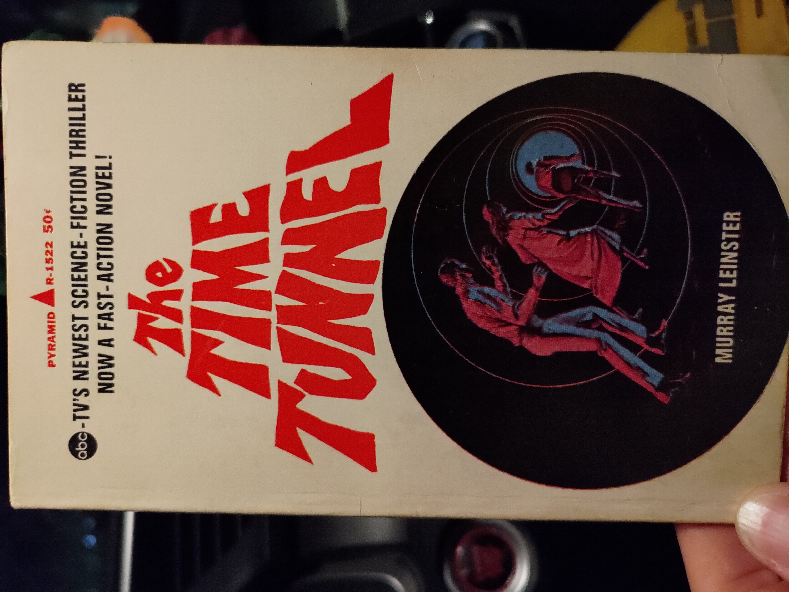
Another book from the Cheyenne library surplus sale, The Time Tunnel is based on the then-airing TV show of the same name and is practically three short stories of steadily decreasing quality as two scientists become trapped in a time other than their own. It's a pretty bad book. Poor writing, often repetitive. I think they skipped paying for an editor to save money, the second segment is full of misspellings and there are two chapter elevens. This second segment is also rather racist against Native Americans, blaming their loss of the collective war against the federal government on their supposed foolish egos and cruel savagery (as described by Leinster) that prevented whites from wanted to support them. To a modern reader, it feels like a satire the way the only female character is portrayed, who is referred to not as Dr. McGregor, or her first name Anne, but as "The McGregor". Despite her being a PHD holder, she spends literally the entire book crying over (and going literally-phrased-as "hysterical" to the point of not being able to do her job) over her fellow coworker/crush getting lost back in time. She literally makes them sandwiches to send back in time. Very dissapointing ending that makes a conclusion opposite of the books theme, that time cannot be changed because the time travelers are part of what has already happened. Not worth your time.
Marsha: The Joy and Defiance of Marsha P. Johnson by Tourmaline (2025)
Review written 4/4/2026
Rating: 10/10
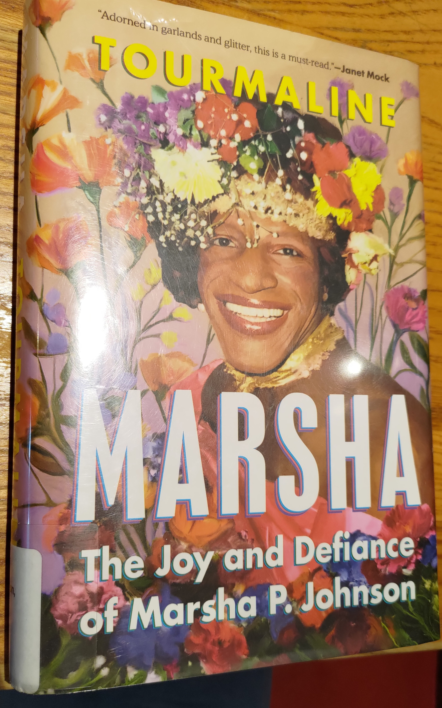
Marsha: The Joy and Defiance of Marsha P. Johnson is an incredible and emotional biography of the queer civil rights icon, Marsha P. Johnson. I cried more than once while reading this book. I only ever knew her name, and when I saw this book presented to me on dispaly at the library I couldn't leave without it. Tourmaline recites that this book was a two decade long project of record finding, interviewing, and putting together the most definitive biography of Marsha to date.
One thing that I didn't like at first was, by it's nature, how involved other people were and how many pages were spent discussing other people. I quickly appreciated however the side-by-side focus of the people around Johnson, the way that she shaped their lives and the bond they held with her. Not all of their stories are flattering, and this book does well to demonstrate that Marsha wasn't just the main character of the Stonewall uprising, but a fully fledged, complicated, human being with all that comes along with it. That personal realism made this biography of her feel so much more alive than other biographies I've read that can often feel like a mission of objective analysis than this book, working as an exploratory of human connection between ourselves and the subject.
I can't recommend this book enough, and infact, I already starting recommending it before I finished it. An amazing and vitally important record of one of American queer history's most significant and impactful voices. Marsha P. Johnson's life was full of so much more work, activism, and real change making than I had ever known, and it was a pleasure to have now come as close as I ever have to exploring her timeless legacy.
Slavery by Stanley M. Elkins (1959)
Review written 4/2/2026
Rating: 2/10
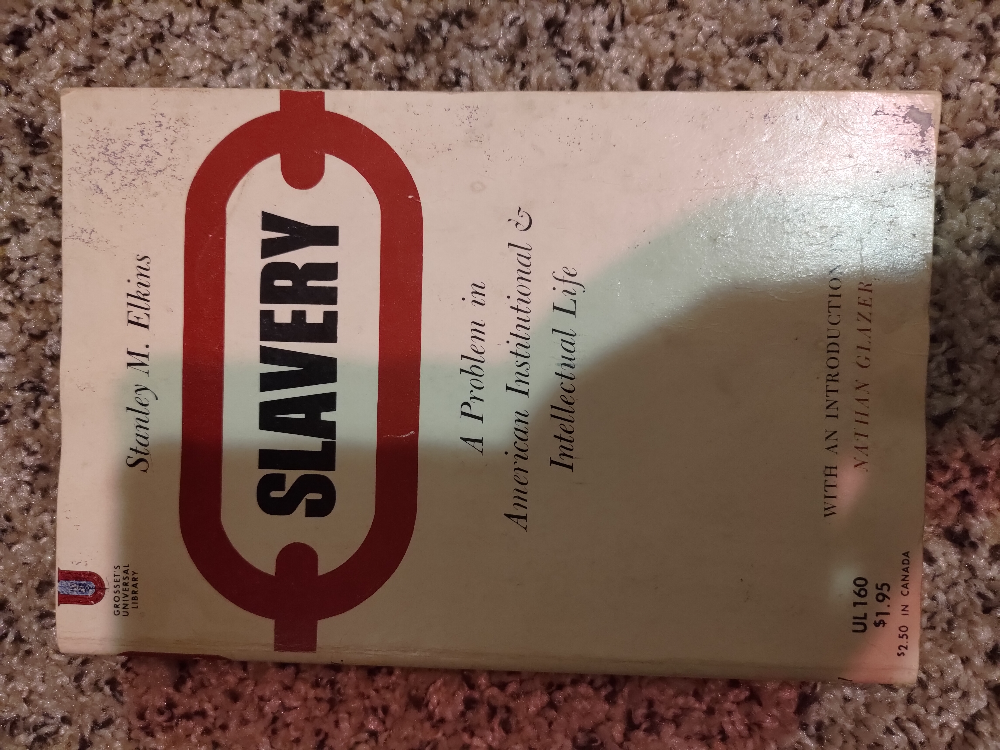
Slavery is a book I picked up at a surplus book box sale in Cheyenne, WY. I picked out this book because I was interested in an analysis of American slavery written in the post-WWII and pre-civil rights era. From my research, it appears that at the time of it’s publication this was considered a groundbreaking book back in 1959. Now, it Is recognized for what it is: extremely outdated, stereotype-ridden, and including of an offensive comparison between concentration camp victims of the holocaust and American enslaved peoples. The book is broken up into four major sections, which I will go over independently.
In the first section titled, An Introduction: Slavery as a Problem in Historiography, Stanley Elkins emphasizes the difference between this book and previous research. He references previous authors, very loosely described as, researchers, who focused on the morality of slavery, the genetic influences of race (eugenics developing great popularity in the early 20th century), and the great deference given to the viewpoints of slaveowners as an assessment of the quality of life enslaved peoples in America experienced. He also asserts that previously, the issue of slavery was too fresh in the mind of American scholarship, and it was not until now that objective assessments can be made of the institution.
In the second section, Institutions and the Law of Slavery, Elkins delves into the major influences that made American slavery (justifiably labeled as chattel slavery) contrasted to the system of slavery in the Spanish colonies of Latin America. This section is particularly interesting, and I’m certain plenty of authors since have done it much better. The essential point is that the freshly colonized United States, being so uniquely developed as a location of freedom from all major European institutions, therefore developed few innate restrictions on the development of slavery. There was no presence of a strong unified church to enforce moral standards, there was only limited influence of a small mercantile aristocracy to influence commercial affairs, of a legacy of a strong justice system with laws ultimately enforced by an all-powerful King in close contact. As a consequence of this lack of prebuilt community, the enslaved peoples brought to the United States were completely cutoff from wider society in a way not present In the Spanish colonies. In Latin America, enslaved people were able to work on a day off, to buy their freedom, to interact with neighbors and learn skills. To be protected by the influence of the strong Catholic Church as fellow “men under God” with certain basic standards upheld in their treatment. For these reasons, it is argued, libertarian capitalism was able to spread uninhibited, to the great detriment of millions of people over hundreds of years.
The third section is the most highly offensive, titled Slavery and Personality. Here, Elkins defends the racist and inaccurate stereotype of the “Sambo”, a Southern archetype for a happy, loyal, and dimwitted slave known to steal, lie, and be lazy. He asserts the racist “culture versus genetics” argument to say that, it is not inferior genetics that made Africans this way, but the “primitive” culture they came from and the culture of slavery they were thrust into. He admits to it being a stereotype, but cites southern plantation owners and “intellectuals” of the ante-bellum South as evidence for it being mostly true. He asserts that because enslaved Africans were so thoroughly detached from their culture and the outside world, knowing nothing beyond their enslavement, they couldn’t help but be content with their status in society, acting almost childlike. This contentment he describes is completely void of any sources cited or considered of actual enslaved peoples in the United States, ignoring the countless incidents of slaves committing suicide to end their enslavement, including acts as severe as running into burning buildings. In the latter half of this section, Elkins refers to concentration camp victims as similarly joyful hard workers, forced to bend to the authority of a master, which he insists on describing as a patriarchal father figure. One major difference that stood out to me was the basic understanding of each parties situation: concentration camp workers were often lied to, and told that working hard would supply their freedom. The American enslaved were under no such pretext.
In the final section, Slavery and the Intellectual, we find assessments of thinkers, particularly the emerged transcendentalist philosophers, and their views of slavery. He returns to the critiques of the rugged individualism developed in the early United Stares, which limited the ability for slavery to be ended by peaceful means. Elkins asserts that the transcendentalist focus on individual accountability over the influence of slavery as an institution made it difficult to solve slavery through policy, as the United Kingdom did at around the same time. Instead, this focus on individuality turned slavery into a purely moral argument (which of course, it was) and this moral paradigm encouraged Southerns to entrench themselves in the system of slavery with little internal resistance. Elkins criticized the idea of accelerationist abolitionists as ineffective, misguided, and detrimental to the ending of American slavery, alienating the South and many would-be abolitionists within it. I found it most offensive that while Elkins insists that immediate abolition was a futile and self-detrimental cause, he makes no attempt to ever cite the source of a formerly enslaved person, such as Frederick Douglass, instead insisting on accepting the views of white gradual-abolitionists and pro-slavery Southern writers. In the final chapter of this section, Stanley Elkins perplexed me by making a “fair” attempt at analysis by citing, and quoting, the most pro-slavery writers of the South.
What did I think of this book? I thought it was really racist. I did however, come into the book expecting such. The holocaust comparison surprised me with it’s failed attempt at intellectualization, instead relying on conjecture and inaccuracies. I found myself most interested in his comparisons between the slavery of the United States and that of Latin America, as well as his critiques of capitalism (which could have gone farther, but Karl Marx was referenced several times in the book). Do I recommend it? Not really. It was a personal curiosity that I picked up for free, and there are plenty of books written since that are less offensive, more accurate, and more detailed and granular than this. I can recommend this book only to someone who is interested in the viewpoints of a very specific American academic time and how the idea of what history “is” is constantly changing. If you read this, you must be prepared to embarrass yourself if anyone catches you with it in your hands.
Star Trek: Faces of Fire by Michael Jan Friedman (1992)
Review written 3/21/2026
Rating: 4/10
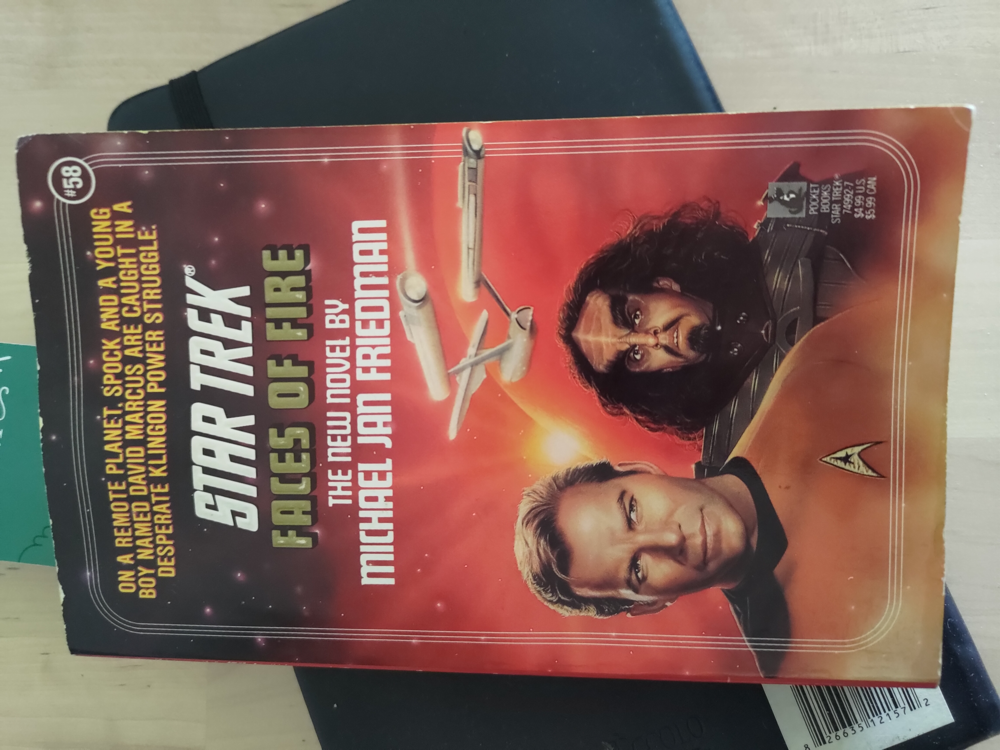
Star Trek: Faces of Fire is a sort of prequel to the second and third Star Trek movies. We meet a young David Marcus, son of Kirk, 10 years before the events of the second film. We also get to see the ascension of Kruge, the Klingon captain of the third. The book has two plots. While Spock remains on the research base for the Genesis device (only called the G-7 here), Kirk and crew go to a planet to thwart an emerging civil war between two religious groups.
Despite the opportunity, the book fails to give much characterization or personality to Carol, the mother of Kirk’s son David. She’s a scientist who takes pride in her job, that’s about it. The Klingon part of the story (a ship occupies the base to acquire the G-7) is interesting, but it was frustrating to see how bumbling and ineffective the Klingons were.
As I’m discovering is typical with these early-90s Star Trek books, there are a couple times when characters are described as being black to differentiate them from the otherwise default, and never described as such, white characters. Also typically, Kirk’s crew are sycophantic and incapable of handling things of their own accord. At a point, Kirk and Scotty go missing, Spock is on the research planet, so who’s in charge of the ship? Seemingly nobody. The most Doctor McCoy does is muse to an ambassador his concern about the situation. It is fortunate things work out because no one seems to have much initiative to try and rescue their missing captain on the planet below.
All in all, another disappointing story from Friedman and I think the last I read of his. I think this story would have been so much better if the entire religious civil war side plot was cut out, and we just got to see some Starfleet-on-Klingon action.
Star Trek: Rules of Engagement by Peter Morwood (1990)
Review written 3/13/2026
Rating: 0/10
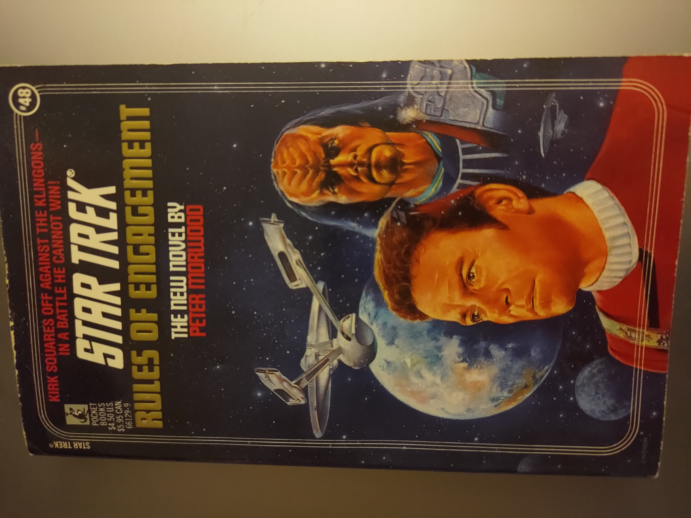
Star Trek: Rules of Engagement is soooo boring. The plot follows the Enterprise being dispatched to evacuate Starfleet personnel from a planet that has recently been couped by generic “terrorists”. Meanwhile, an experimental Klingon battleship has gone rouge with a plan to take control of the very same planet. The battleship is cool, but never gets any showtime until the very last chapter, and truly, nothing happens almost the entire book. None of the side characters add anything to the story and are all replaceable. 90% of the book reads like the first 5 minutes of any episode. Don’t waste your time on this book.
Flowers For Algernon by Daniel Keyes (1966)
Review written 2/15/2026
Rating: 10/10
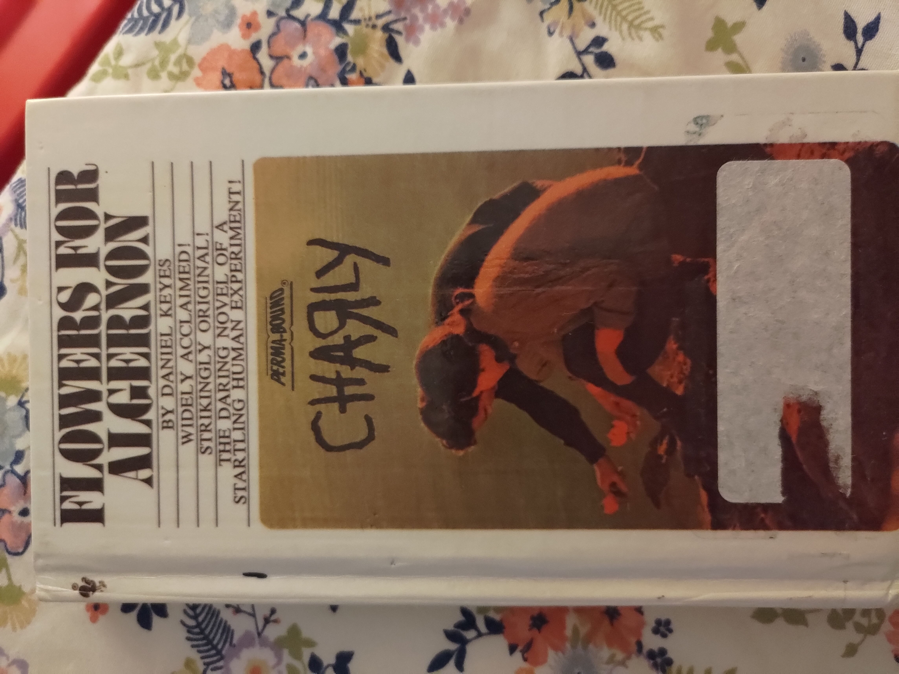
Flowers For Algernon is nothing short of the best book I have read at this point in my life. It was recommended to me by my friend Dominic. It is about a man, Charlie Gordon, who has an intellectual disability. Through a revolutionary treatment, he his gifted with an IQ that soon surpasses that of everyone around him, for a short time.
The characters are real. They’re well rounded. They make mistakes, and they make amends. Every character is a human being with flaws and successes and dreams and limitations. This story explores these themes, of what it means to have a good life, and what it means to live.
This story is so excruciatingly, satisfyingly, tragic. Be prepared for this when you read it, which, you absolutely must. About 30 pages from the end of the book, Charlie Gordon writes a reportive analysis of the medical procedure he underwent. I implore you to pause here, and when you have time, read every page after in succession without pausing.
Star Trek TNG: Reunion by Michael Jan Friedman (1991)
Review written 2/08/2026
Rating: 4/10
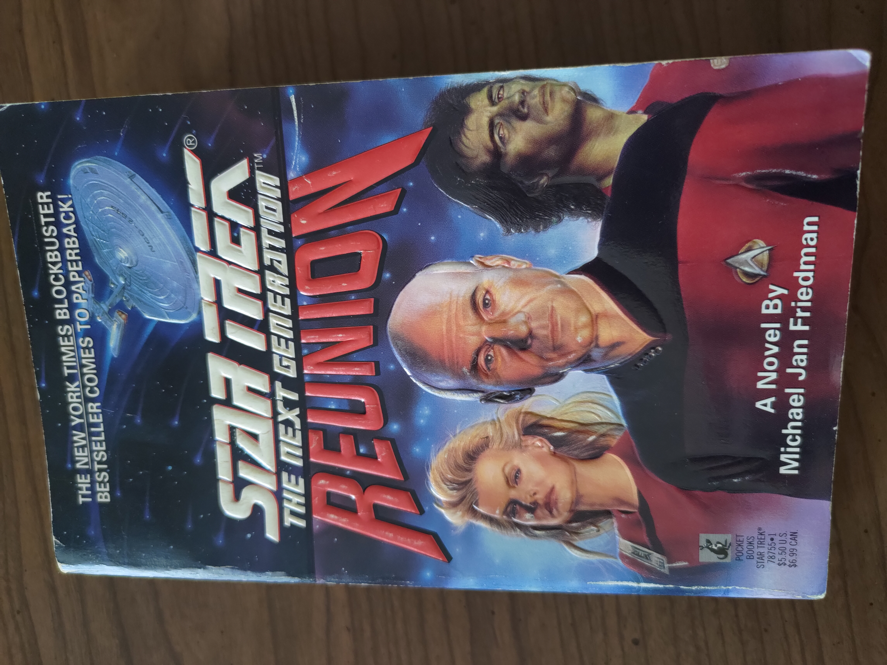
Star Trek TNG: Reunion was, disappointing. It introduces the members of Picard’s old crew when he was the captain of the Stargazer. One of them is set to be anointed as the new ruler of their world, and the Enterprise is tasked with transporting him and his chosen entourage (Picard and the alien’s best friends from the Stargazer). A mystery strikes, as someone begins sabotaging the ship and attempting to assassinate the old Stargazer crew members!
This really got me hooked, and for the first half of the 300+ page book, I was really into it. But new plot points get added that, really do not need to be there, at all. We get to see a little backstory from Jack Crusher as Beverly listens to some old audio recordings (which conflicts with Wesley’s comment in the series about how sometimes he forgets his father’s voice). Again, another story where the good doctor gets as much character development as she did in the series: next to none. The mystery assassin plot turned out a little disappointing as well.
The book was, okay. I was so excited and I was really let down. It says it was a bestseller on the cover, and I think a lot of people were interested in it because of the backstory of the Stargazer’s final moments. Even if you’re going to pick it up for that purpose, I don’t think you’ll be satisfied with what you get out of it. I don’t recommend this book.
Landscape With Invisible Hand by M.T. Anderson (2017)
Review written 1/31/2026
Rating: 7/10
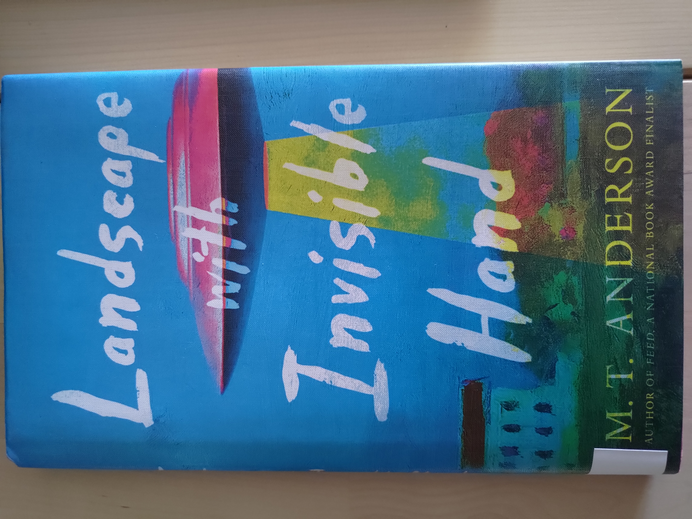
Landscape With Invisible Hand is a science fiction story about an alien race that has, essentially, beat humanity in the game of capitalism. We follow a teen artist as he experiences this new modern era.
I watched the movie that was based on this book first, and if you have done the same: they are completely different stories. The movie enraptured me with it’s shock moments and spectacle. The book is more real. It's darker, and sadder, but ends on a high(er) note.
I enjoyed the bite size chapters, and I read the book in a single evening. As the author intended, it really felt like each chapter was painting a scene in this world. The sentences read like brushstrokes.
The book was full of themes, some laid out more cleanly than others. As with the best science fiction, the story is about humanity, not the aliens. Commentary on capitalism, post-war economics, power, the surrendering of cultural pride in the face of colonialism, poverty and the callousness it induces, and by-your-bootstraps Americanism. It is a young adult novel, so I don’t blame its lack of subtlety in regards to many of these issues, but it makes the story no less entertaining.
I recommend this book. I think it's a great and entertaining read for anyone.
Star Trek TNG: Here There Be Dragons by John Peel (1993)
Review written 1/31/2026
Rating: 6/10
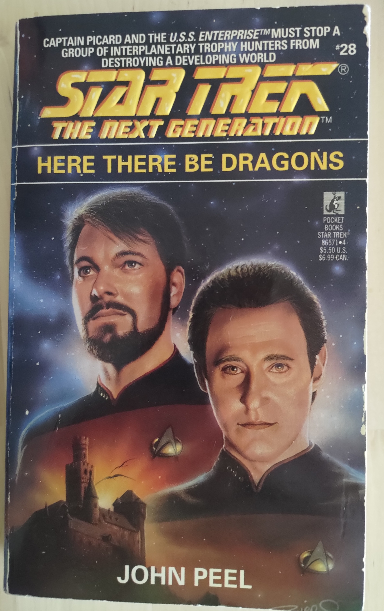
Star Trek TNG: Here There Be Dragons is a really fun book. It made me laugh a lot at it’s cheesiness, and really felt like a screenplay right out of Season 1. Picard and crew must go down to thwart the plot of an international trophy hunting gang, corrupting the village on a planet of transplanted medieval citizenry by “The Preservers” first introduced in The Original Series.
We got to see some minor characters have a time to shine, including Reg Barclay and Ro Laren (including an unusual and unnecessary moment of her in the nude). However, typical to most of TNG, Doctor Crusher and Troi each get very minor roles (Crusher is a higher rank than LaForge, why is she not acting captain?). Although LIEUTENANT Miles O’Brien is part of the away team, it did turn into a typical Picard-Data lead plot on the surface of the planet. Riker and Troi doing their own thing getting into trouble (the latter mostly just attending to the plans of the former), and Ro Laren existing mostly to help out in the final moments.
The characters felt well written as themselves (LaForge felt a little generic to me), but I think the author introduced too many to manage at once and had to give most of them rather dull storylines. A fun and silly book if you find yourself enamored by Star Trek and pop-medieval history, but as said above, it reads like an early season episode with a fair share of minor disappointments in what could have been.
JT's Ladies Ride Again by J. T. Edson (1989)
Final review written x/xx/xxxx
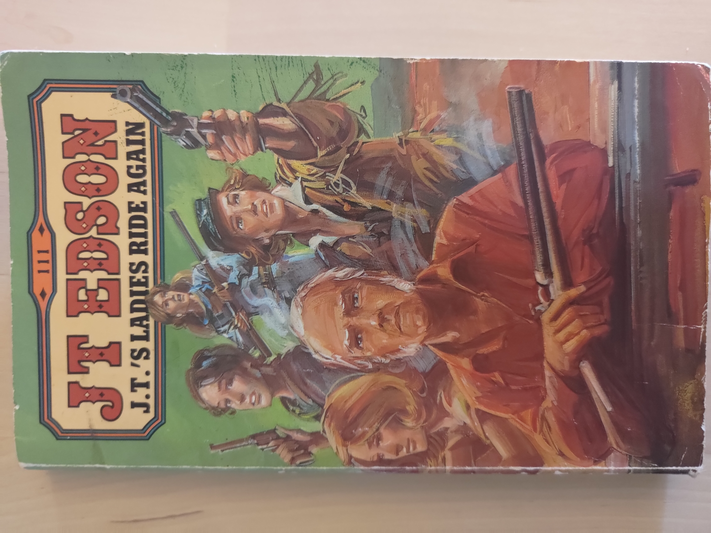
JT's Ladies Ride Again is a a collection of four short stories about varying female protagonists. Each story will get it's own review and rating. This is, hands down, the most offensive piece of literature I have ever read, despite the author's introduction insisting that his writings will be different than what is typically written by others that "Women's Lib" refer to as "Male chauvinist pigs" (ironic!). The book is dedicated to, "...all the idiots of the press who have written articles about me...May the blue bird of happiness fly over them - when it has dysentery...". I couldn't stop laughing at how many just weird and off-the-cuff things were in these stories, and I will quote the best. I didn't go out of my way to get this book, I got it in a $10-fill-a-box event from the Cheyenne library.
Rating: 1/10 All Done Without Deductive Reasoning is about three car jackers in Texas who are finally caught by our protagonist, who is referred to multiple times as, "Woman Deputy Alice Fayde", and "formerly blonde red-head" (after she took her disguise off). Repeating himself is something Edson does frequently describing almost everything, and I think the story could be a third shorter if he cut out such. Alice is only present in the story because the criminals target women, so that's her explicit purpose for being in this sting operation, and fortunately, well trained in Karate to take them down. Alice is blessed by being one of only two characters (the other being a criminal begging for his life) who get's the chance to speak, and it is entirely telling the same criminal to not try anything, multiple times, while she threatens to shoot him in the groin (as women have trained to do after the court system refused to prosecute male assaulters, the author states). The criminals get gobs more backstory than our protagonist does, and she gets about the same as some random male deputy who shows up at the end with his 100 year old shotgun to stop the final escapee. When referring to the carjackers as hispanic, Edson insists on describing the third as "...looked like the anglo ancestor..." and similarly more than once. Also, the only officer who's race is described is also hispanic, because he has to tell the criminals their Miranda Rights in Spanish because, of course, despite speaking English, the three would get away with it in court by lying that they didn't. In the final scene as the final criminal is stopped in his getaway, a bystanders car is wrecked But no fret, because, as written in one of the many footnotes (mostly referencing Edson's other works), "Being what 'liberals' term a 'redneck' and, therefore, a stout believer in the enforcement of law and order, the owner raised no objections...". I laughed out loud at that part. Overall, it was quick paced and fun, yet ultimately a very basic fight sequence that shouldn't have taken 40 pages to tell.
Rating: 0/10 A Case of Blackmail is about a a school for the daughters of sophisticated criminals, that have been infiltrated by a thoroughly described, gay leftist pedophile, who is blackmailing the leadership of the school for money. Blackmail of what sort, you may ask? It seems as small as, there is an underground fight club among the girls of the school that the criminal families watch. One of the fighters is a 17 year old who is described as, “…her extremely well defined contours also qualified for the designation ‘hour-glass’." …the size of Penny’s bosom exceeded that of Ann’s and was firm and out-thrust against the plunging neckline of her costume." "…her waist was trim and her hips filled out curvaceously…” In this fight, the audience is declared to find, “the performances in the tag team debate were skillful and even erotically stimulating”. This is included to draw contrast to our antagonist Tremayne, whose “preferences along those lines being directed to members of his own sex or children of a more tender age than Penny”. I can’t help but quote so much of this story, because Tremayne is a caricature of how the right wing views those on the left. He is ugly, a communist, he goes to leftist agitator meetings at gay bars, and he’s a pedophile. The ironic part, is that it is the authors descriptions of the children in this story that are most horrific. After being tricked into eating a poisoned cake at the blackmail-money swap (because he’s also a greedy pig of course!), Tremayne is mobbed by a group of schoolgirls described as wearing, “…black micro-skirts and open necked, short sleeved navy blue blouses…a sufficiently thin material and snug fit indicating each wearer was well endowed physically - all were in their late teens…surrounded and crushed amongst them in a way which any normal man would have found most enjoyable…” This story was honestly so disgusting in how much it sexualizes children, and it truly seems like the author created an awful pedophile antagonist, in order to make his own attraction to teenage girls more palatable. It reeks of projection and right wing dick stroking the entire time. It even includes a brief flashback to when the schoolgirls defeated a British communist who was working for the Nazis in 1939, the contradiction completely lost on anyone ignorant enough to believe in “horseshoe theory”. I almost stopped reading the entire book in the first chapter, but I finished the story out of determination, and my life is now worse for it. Unfortunately, my rating system does not allow negative values, but this is THE worst piece of literature I have ever read. This is the epitome of conservative smut.
Rating: 0/10 The Deadly Dreams is the shortest story so far, and the most boring. Again, way to much fluff and excessive description of every single character and what fabric their shirt is made of, including some on-brand descriptions of the protagonists breasts. There is a racist comment referring to the two antagonists as, "...exceptionally fine examples of the Caucasion sub-species...". The plot follows Rita, an undercover cop (but not actually, it's honorary) and her sting of the two antagonists cheating to win money at the horse races. So, so, so boring. I really don't have anything else to say about it.
Rating: x/10 Draw Poker's Such A Simple Game Still reading!
Star Trek: Crossroad by Barbara Hambly (1994)
Review written 1/12/2026
Rating: 3/10
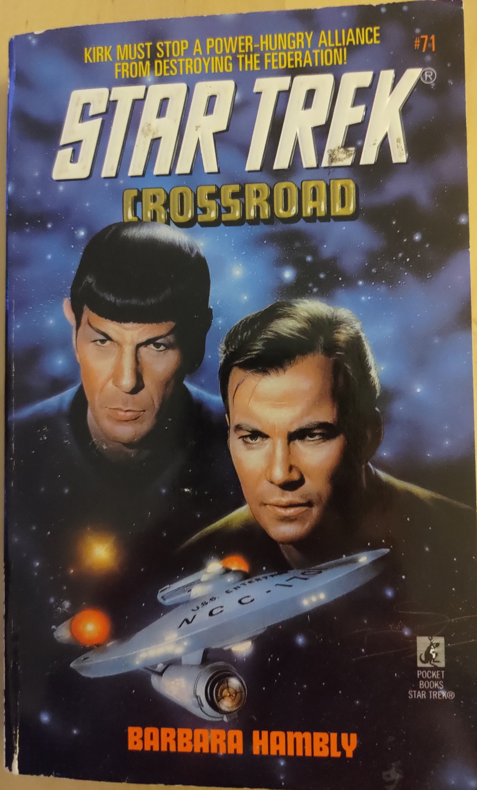
Star Trek: Crossroad is a Star Trek The Original Series novel that takes place three months before the end of Kirk’s first five-year mission. This is the first Star Trek book I’ve ever read and it was pretty alright.
Typical to a lot of Star Trek, there were a lot of characters with not a lot to do. Sulu gets a productive role in the story. Scotty gets really pushed to the side (I think as a way to explain why the characters can’t do certain tech stuff). Though Christine Chapel gets a good chance to shine, I don’t think she’s given as much of an opportunity as she could have been given. The book tries, but it doesn't resonate strongly.
I was surprised by the supplication of lore concerning the neurodivergent in the Trek universe, and I was disappointed in how it was presented. I would expect that a book, written in the 90s, about an idyllic humanity hundreds of years in the future, would have a better vision for the neurodivergent than being tasked to menial labor. I found it highly unimaginative and rather offensive.
I felt that the plot wasn’t very continuous. Yes, I could understand what was going on, but it felt like I was jumping from one segment of an outline to another, over and over. It didn’t bother me too much, but there were times that it didn’t feel very natural the way that events were progressing. The Enterprise also manages to get hijacked, not once, but twice! When it came to the ending: I was shocked. It was not a very good ending if you ask me. I don’t think a good story has to have a happy ending, but the book was full of tragedy, and I kept expecting something that would make it all worth it in the end, and that never came.
It wasn’t a bad book, but it was a bit of a slog to me. Part of it was likely because I never found the Original Series one of my preferred crews, so I didn’t find the characters very compelling. Combined with the ending, and the unexpected actions of several of the characters, I was not satisfied at the end with the time I put into it.
Frankenstein by Mary Shelley (1818)
Review written 1/5/2026
Rating: 9/10
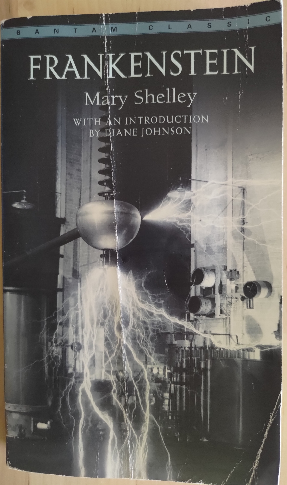
Frankenstein is a classic, and for good reason. I’m thankful to have finally read it. A tragedy in the most classic way, where the creator of the famous monster has his entire life destroyed by his obsession.
It’s dramatic, and I can really feel for the tragedy of the characters. A comparison to Moby Dick comes to mind, but unlike the monologuing of the former, Mary Shelley really keeps me enthralled and I never felt my mind wandering from the story. It’s progression felt natural. I loved the letters as part of the story. I loved the starting fake-out.
When I think of drawbacks, it is vastly difficult to find one. It felt like a Greek epic. The characters were unique and compelling, and all very human. I found Victor’s self isolation very human and relatable, how easy it is to become lost in our own affairs.
I can almost say, Shelley becomes lost in her own poetry. But that isn’t true. It’s not verbose, it adds such richness to the world and heightens the drama so much. It does sometimes become difficult to get through, however.
It’s not a very long book, and I think would be best read over a single weekend. The story flows together so smoothly you won’t want to put it down. Do not let it’s age deter you. I highly recommend this book.
Monday The Rabbi Took Off by Harry Kemelman (1972)
Review written 12/22/2025
Rating: 4/10
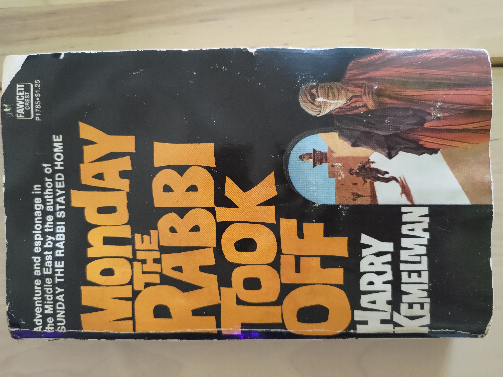
Monday The Rabbi Takes Off is the third in a series of mystery books starring the Rabbi David Small. It is very understandable as a stand-alone story and often I found myself forgetting that there was a backstory to it. Small takes a sabbatical to visit Israel, a place he has never been, as he contemplates his future: does he want to remain a rabbi to his loyal congregation, or retire to devote himself to personal research and relaxation. The story takes place in the present time, which in 1972 was only 5 years after the Six-Day War, and just 24 years after the founding of Israel. Rather late, about halfway through the book, there is an attack, and that is what the “mystery” revolves around.
Although this is intended to be a mystery novel, the primary conflict is within David Small himself and his self-discovery. Most of the story revolves around him moving around parts of Israel, and that is what makes the book intriguing. The reader gets a glimpse of what it was like living in Israel at the time, primarily in Jerusalem, from a Jewish Israeli point of view.
Alternating with Rabbi Small’s adventure, is the office politics of his congregation back home as they debate replacing him with a more “hip” and experienced Rabbi that the group has quickly grown fond of.
The “C-Plot” of the book, is the mystery itself. The elements of anti-Arab racism are prevalent in this plot line. This is in particular demonstrated by a minor character who is easily tricked by the antagonists because of his liberal Americanized idealism. Kemelman sanitizes the conflict of the time, and intentionally flattens the characters and motivations involved in the attack. The characters refer to all non-Israeli citizens only as Arabs, relying on stereotypes and generalizations to make a clear good-versus-bad dynamic, despite the occasional attempts at depth.
Ultimately, I did enjoy the book, but I don’t think most would. It’s a very slow burn, and the mystery portion of it is very dull. If you’re interested in seeing a romanticized “real life” of being Jewish in Israel in the early 70s, that would be it’s only redeeming aspect.